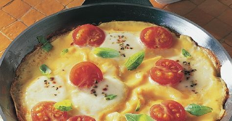

Schnelle Rezepte – in weniger als 35 Minuten fertig! - [ESSEN UND TRINKEN]
2021.06.24 14:33
Rubriken Rezepte Pizzakunst Genuss - leckere Ideen für jeden Tag Schnell was Gutes Sommer-Rezepte Tomatensuppe Bruschetta Saltimbocca Vegane Rezepte Schnell & vegan Veganer Brunch Veganes mit Tomaten Veganes mit Auberginen Leichte Rezepte Leichte Sommerrezepte Leicht & schnell Leichte Salate Leichte Desserts Low Carb Low Carb im Sommer Low Carb Salate Low Carb & vegetarisch Low Carb Desserts Vegetarische Rezepte Vegetarische Sommergerichte Vegetarische Salate Vegetarisches mit Ziegenkäse Schnell & vegetarisch essen&trinken Für jeden Tag Einfache Hauptgerichte Leckere Beilagen Süßes & Desserts Kindergerichte Thermomix® Rezepte Fingerfood für Thermomix® Low Carb für Thermomix® Nachtisch für Thermomix® Brunch für Thermomix® Schnelle Rezepte Schnelle Sommer-Rezepte Schnelle Mittagessen 20-Minuten-Rezepte 30-Minuten-Rezepte Tim Mälzer Rezepte Tims Sommer-Rezepte Tims gefülltes Gemüse Avocado-Allerlei Tims Rezepte mit Hack Desserts Dessert-Klassiker Panna cotta Parfait Milchreis Eis selber machen Fleisch Rezepte Steak Schnitzel Hackfleisch-Rezepte Hähnchen-Rezepte Audiocooking Suche Neuste Rezepte Gewinnspiele Rezept-Archiv Grillen Grillbuffet Grillspieße Vegetarisch grillen Beilagen zum Grillen Stockbrot Salat Kartoffelsalat Nudelsalat Couscous-Salat Bulgursalat Dips Tzatziki Guacamole Kräuterbutter Saucen zum Grillen Grill-Tipps Lachs grillen Spargel grillen Pulled Pork Video: Bratwurst Grillen Archiv Getränke Cocktails Alkoholfreie Cocktails Aperol Spritz Mojito Gin Tonic Kaffee Eiskaffee Griechischer Frappé White Russian Kaffeesorten Tee Eistee selber machen Chai Matcha Teesorten Alles für die Hausbar Wodka Whisky Rum Gin Trends Nachhaltiger Genuss Nachhaltige Küchengeräte Regionale Küche Die grüne Seite Nose to tail Outdoor-Pizzaofen Zero Waste Küche e+t Food-Shop e+t Weinpaket Food-Trends One Pot Pasta Craft Beer Goldene Milch Ramen essen und trinken Reisewelt Selbstgemacht Kimchi Gin selber machen Senf selber machen Mayonnaise selber machen Leicht und fit durch den Sommer! Tipps Video Kochschule Nudeln richtig kochen Fisch braten Artischocken zubereiten Pesto selber machen Video Rezepte Einfach lecker Rikes-Backschule Just vegan mit Nicole Just Fabios Kochschule Wie macht man ? Joghurt selber machen Step by Step: Cannelloni Step by Step: Carpaccio Step by Step: Schnitzel Backschule Kokos-Himbeer-Torte Cheesecake mit Kirschen Geeiste Baiserrolle Aprikosen-Bienenstich Backen Einfach & Schnell Cookies-Rezepte Waffelteig Pfannkuchenteig Muffins Torten Erdbeertorte Prinzessinnentorte Schokoladentorte Schwarwälder Kirschtorte Kuchen Erdbeerkuchen Zwetschgenkuchen Zitronenkuchen Käsekuchen Herzhaftes Quiche Brot selber backen Pizza selber machen Herzhafte Tarte Gesund Superfood Quinoa Kurkuma-Rezepte Leinsamen Avocado Gesunde Rezepte Gesundes Frühstück Gesundes Mittagessen Gesundes Abendessen Gesunde Snacks Gesund Essen Hirse Gesundes im Päckchen Smoothies Clean Eating Rezepte Gesunde Wochenpläne Frühling Sommer Herbst Winter Gutscheine OTTO Gutscheine Baur Gutscheine Ebay Gutscheine Alle Gutschein Shops Vergleiche Abo Suche Services Aboshop Gewinnspiele Audiocooking Podcast Newsletter bestellen Kochbuch Folgen Sie Essen & Trinken auf Facebook Pinterest Instagram Impressum + Kontakt AGB Presse Werbung Datenschutzhinweise Datenschutz-Einstellungen Über uns Rezepte Grillen Getränke Trends Tipps Backen Gesund Gutscheine Vergleiche Abo Suche
Schnelle Rezepte – in weniger als 35 Minuten fertig!
Schnelle Rezepte – in weniger als 35 Minuten fertig!
Haben Sie wenig Zeit und trotzdem Lust auf ein leckeres Essen? Dann kochen Sie unsere schnellen Rezepte. Hier finden Sie Gerichte mit Fleisch oder Fisch, für Vegetarier und Veganer und jede Menge weitere saisonale Rezeptideen, die ruckzuck zubereitet sind.Schnell & lecker kochen: Rezepte unter 35 Minuten
15 BilderSchnelle Mittagessen
36 BilderSchnelle Rezepte für jeden Tag
33 BilderEinfache und schnelle Vorspeisen
27 BilderSchnelle Rezepte für Desserts
31 BilderSchnelle Rezepte für Salate
24 BilderSchnelle Rezepte für Suppen
30 BilderSchnelle Rezepte für Aufläufe und Gratins
26 Bilderessen & trinken Newsletter - kostenlos anmelden
Schnelle Kuchen-Rezepte unter 60 Minuten
27 BilderSchnelle Rezepte aus dem Ofen
34 Bilder Anzeigeessen & trinken Gewinnspiele – mitmachen und gewinnen!
22.09.2020Schnelle Rezepte für Snacks
35 BilderSchnelle Asia-Küche
28 BilderSchnelle Pfannengerichte
21 BilderSchnell & einfach: Fingerfood-Rezepte
29 Bilderessen & trinken Newsletter - kostenlos anmelden
Schnelle deutsche Küche
25 BilderSchnelle Rezepte aus dem Vorrat
35 BilderSchnelle Rezepte für Pfannkuchen und Co.
30 BilderSchnelle Rezepte mit Quark
23 BilderEier Rezepte: schnell und lecker
32 Bilder Anzeigeessen & trinken Gewinnspiele – mitmachen und gewinnen!
22.09.2020Schnelle Rezepte: gesund & leicht
Schnell soll es gehen, aber bitte trotzdem gesund und leicht. Wir haben da was für Sie!Rezepte: schnell + gesund
13 BilderLeichte schnelle Rezepte
33 BilderSchnelle und gesunde Rezepte mit Fisch
18 BilderRezepte: schnelle, leichte Hauptgerichte
31 BilderLow Fat auf die Schnelle
17 Bilderessen & trinken Aboshop – tolle Angebote und Prämien
21.09.2020Schnelle Rezepte mit Fleisch
Für die schnelle Küche eignen sich geschnetzeltes Fleisch oder Steaks, Hähnchenbrust und Hackfleisch.Schnelle Rezepte mit Fleisch
28 Bilderessen & trinken Aboshop – tolle Angebote und Prämien
21.09.2020Schnelle Rezepte mit Hackfleisch
28 BilderSchnelle Rezepte mit Hähnchen
30 BilderSchnelle Rezepte mit Hähnchenbrust
21 BilderSchnelle Rezepte mit Fisch
Fischfilets und Meeresfrüchte sind ebenfalls schnell gar und lassen sich vielfältig kombinieren.Schnelle Rezepte mit Fisch
29 BilderSchnelle Rezepte mit Lachs
29 Bilder GutscheineOTTO Gutscheine
eBay Gutscheine
baur Gutscheine
Amazon Gutscheine
Galeria Gutscheine
Saturn Gutscheine
LIDL Gutscheine
NIKE Gutscheine
Heine Gutscheine
Deichmann Gutscheine
Christ Gutscheine
myToys Gutscheine
Boden Gutscheine
JD Sports Gutscheine
Galaxus Gutscheine
mömax Gutscheine
XXXLutz Gutscheine
JAKO-O Gutscheine
PARSHIP Gutscheine
Schnelle Rezepte mit Garnelen
27 BilderJetzt unser werbefreies Premiumportal testen: audiocooking.de ist Kochen mit Voice-Funktion!
24.09.2020Schnelle Rezepte: vegetarisch und vegan
Hier finden Sie vegetarische und vegane Rezepte – schnell zubereitet und extrem lecker!Schnelle Tofu-Rezepte
19 BilderJetzt unser werbefreies Premiumportal testen: audiocooking.de ist Kochen mit Voice-Funktion!
24.09.2020Vegetarische Rezepte: Schnelle Gerichte
35 BilderSchnelle und vegane Rezepte
31 BilderSchnelle Rezepte mit Gemüse, Obst und weiteren Zutaten
Finden Sie hier tolle Rezepte mit beliebten Zutaten wie Spinat, Brokkoli, Tomaten, Avocado oder Ei – in mindestens 35 Minuten fertig zubereitet!Gemüseküche: Schnelle Gerichte
21 BilderSchnelle Rezepte mit Tomaten
35 BilderSchnelle Rezept mit Spinat
26 BilderSchnelle Rezepte mit Brokkoli
25 BilderSchnelle Rezepte mit Rote Bete
14 Bilderessen & trinken Newsletter - kostenlos anmelden
Rezepte: Spargel schnell & einfach
35 BilderSchnelle Rezepte mit Rhabarber
18 BilderRezepte: Schnelle Gerichte mit Aprikosen
7 BilderSchnelle Rezepte mit Chicorée
20 BilderPfifferlinge: Schnelle Rezepte
20 BilderSchnelle Rezepte mit Avocado
35 BilderKräuter in schnellen Rezepten
31 BilderSchnelle Sattmacher
Nudeln, Kartoffeln und Reis sind schnell zubereitet und besänftigen den Hunger . Unsere schnellen Rezepte für diese Sattmacher finden Sie hier.Schnelle Rezepte mit Pasta
38 BilderSchnelle Rezepte mit Kartoffeln
30 BilderSchnelle Rezepte mit Reis
28 BilderBesonders & schnell
Manchmal muss man das Essen den Lebensumständen anpassen. Kein Problem! Hier finden Sie schnelle Rezepte, die besonders schnell, für kleine Haushalte oder Kinder geeignet sind.Endspurt: 15-Minuten-Rezepte
35 BilderDie besten 20-Minuten-Rezepte
27 BilderDie besten 30-Minuten-Rezepte
29 BilderDie besten 40-Minuten-Rezepte
30 BilderRezepte für den kleinen Haushalt
13.08.2020Schnelle Rezepte für Kinder
34 BilderSchnelle Saisonrezepte
Damit Sie mit saisonalen Zutaten schnell kochen können, haben wir hier Rezepte mit beliebten Saisonprodukten für Sie, die in 35 Minuten fertig sind.Schnelle Frühlingsrezepte
33 BilderSchnelle Sommer-Rezepte
33 BilderSchnelle Herbst-Rezepte
34 BilderSchnelle Winter-Rezepte
35 BilderZum Schnelle Rezepte Archiv
24.09.2020 Der Hunger ist groß und es soll schnell gehen! Wir haben für Sie schnelle Rezepte fürs Mittagessen, Abendessen und zwischendurch. Mit besonderen Zutaten wie Avocado , Tomaten oder Rote Bete, Kartoffeln und Pasta. Schnelle Rezepte mit Fleisch, Fisch für Vegetarier und Veganer haben wir natürlich auch, ebenso wie schnelle Rezepte für eine gesunde Ernährung . Kurzum – die besten Rezepte für jeden Tag .Schnelle Rezepte
13.08.2020 - 17:08 UhrSchnelle Rezepte – in weniger als 35 Minuten fertig!
Schnelle Mittagessen
Schnelle Rezepte für jeden Tag
Schnelle Pasta Rezepte
Schnelle Rezepte für Aufläufe & Gratins
Schnelle und vegane Rezepte
Schnelle Rezepte mit Kartoffeln
Schnelle Rezepte mit Fleisch
Schnelle Rezepte für Salate
Schnelle Rezepte mit Avocado
Schnelle Rezepte mit Lachs
Rezepte: schnell + gesund
Schnelle Rezepte - unter 40 Minuten
Endspurt: 15-Minuten-Rezepte
Die besten 20-Minuten-Rezepte
Die besten 30-Minuten-Rezepte
Die besten 40-Minuten-Rezepte
Schnell durch die Saison
Schnell & lecker: Frühlingsrezepte
Schnelle Sommer-Rezepte
Schnelle Herbst-Rezepte
Schnelle Winter-Rezepte
Bistroküche
Tipps für die schnelle Küche
Was koche ich heute?
13.08.2020 - 17:11 UhrWas koche ich heute?
Darauf freuen wir uns
Blechkuchen
13.08.2020Blumenkohlsuppe
12 BilderBasilikum-Rezepte
08.03.2021Kichererbsen-Rezepte
33 BilderBrokkolisalat für Thermomix ®
Geburtstagskuchen
43 BilderGrillen
08.03.2021Süßkartoffel-Pommes
21.12.2020Fisch-Rezepte
25.09.2020Sushi selber machen
25.09.2020Pizzateig für Thermomix ®
Windbeutel
25.09.2020gefüllte Champignons
08.03.2021Nudelsalat
08.03.2021Gemüselasagne
(198)
30 Min. 686 kcalPapaya
08.03.2021Couscous
25.09.2020Kräuterbutter
08.03.2021Eis für Thermomix ®
Brownies
25.09.2020Hummus
25.09.2020Gyrossuppe
(24)
45 Min.Rührkuchen
Holunderblütensirup
(678)
30 Min. 206 kcalPorridge
25.09.2020Dip für Thermomix ®
25.09.2020 Weitere interessante Inhalte Archive im Überblick Link-Übersicht Rezept-Archiv Themen Archiv News-Archiv Archiv Service-Angebote Produkttests & Vergleiche Newsletter Abo-Übersicht Audiocooking Gutscheine Stellenangebote Nach oben Impressum + Kontakt AGB Presse Werbung Datenschutzhinweise Datenschutz-Einstellungen Über uns© Deutsche Medien-Manufaktur GmbH & Co. KG
- 21 schnelle Rezepte für einen leckeren Feierabend .
- Kochbuch: Schnelles Abendessen | EAT SMARTER
- Schnelles Abendessen | Leckere Kochideen | Kitchen Stories
- Rezepte für ein schnelles Abendessen | Chefkoch.de
- Schnelle Mittagessen - 6 Rezepte unter 30 Minuten • Koch-Mit
- [Schnell & einfach] 3112 leckere Rezepte zum Abendessen .
- Gesunde-Abendessen-Rezepte | Swissmilk
- 2871 leckere Rezepte fürs Abendessen - REWE
- 900+ ABENDESSEN SCHNELL & EINFACH . - Pinterest
- Abendessen-Rezepte - einfach und lecker | DasKochrezept.de
- 21 schnelle Rezepte für einen leckeren Feierabend .
- Kochbuch: Schnelles Abendessen | EAT SMARTER
- Schnelles Abendessen | Leckere Kochideen | Kitchen Stories
- Rezepte für ein schnelles Abendessen | Chefkoch.de
- Schnelle Mittagessen - 6 Rezepte unter 30 Minuten • Koch-Mit
- [Schnell & einfach] 3112 leckere Rezepte zum Abendessen .
- Gesunde-Abendessen-Rezepte | Swissmilk
- 2871 leckere Rezepte fürs Abendessen - REWE
- 900+ ABENDESSEN SCHNELL & EINFACH . - Pinterest
- Abendessen-Rezepte - einfach und lecker | DasKochrezept.de
